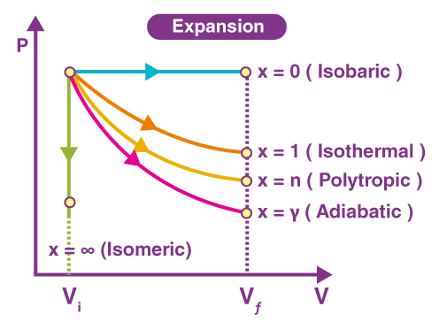
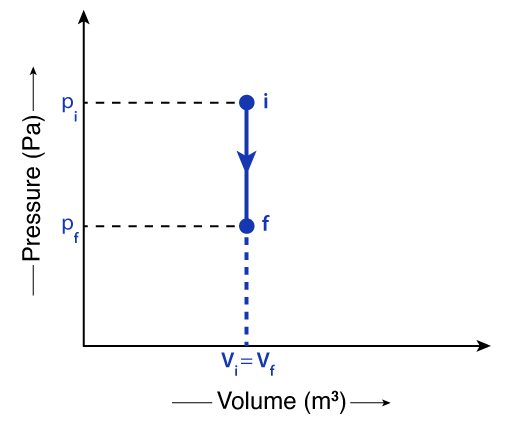
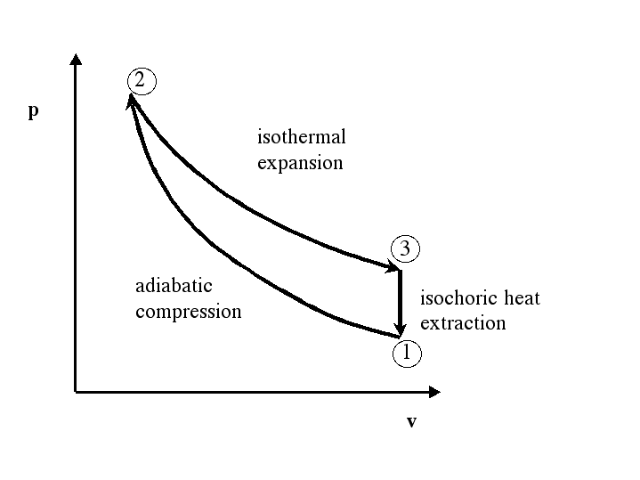

Thermodynamics
Every process below starts from the same point on a P–V diagram. Which path the gas takes — constant volume, constant pressure, constant temperature, or no heat at all — decides everything about Q, ΔU and W.

Closed vs. Isolated Systems
The First Law applies inside a closed system — get this boundary condition right before anything else.
Closed system
- No mass transfer in or out
- Energy can be transferred in both directions — as heat and work
Isolated system
- No mass transfer
- No energy transferred, at all
From here on, every diagram and formula assumes we're inside a closed system.
Which system allows energy to move in or out (as heat and work), but never allows mass in or out?
The First Law: Conservation of Energy
For a closed system, this is just conservation of energy written for heat and work.
Q, ΔU and W are all measured in joules — heat, change in internal energy, and work, respectively.
Work done by / on a closed system
P in pascals, ΔV (change in volume) in m³, W in joules.
Work done = the area under a P–V diagram. The direction of the arrow (i.e. whether volume increases or decreases) sets the sign.
Clausius sign conventions
- Q = + heat flows from surroundings into the system
- ΔU = + internal energy increases
- W = + system does work on the surroundings
- W = − surroundings do work on the system
ΔU for an Ideal Gas
where N = n · NA (number of molecules = moles × Avogadro's number)
Isovolumetric Cooling, A → B
An ideal gas undergoes an isovolumetric (constant-volume) change from state A to state B.
Given
- At A: P = 4×10⁶ Pa, V = 1.5×10⁻⁴ m³, T = 612 K
- At B: T = 386 K
Q: How much thermal energy is removed from the gas going from A to B?
Step 1 — Read the graph
Isovolumetric ⇒ volume is fixed. Temperature falls, so (from PV = nRT) pressure must fall too — a vertical line straight down from A to B.

Thermal energy is removed — flowing from the system to the surroundings — so we expect Q negative.
Step 2 — Apply the First Law
Q = ΔU + W
Isovolumetric ⇒ ΔV = 0 ⇒ W = P·ΔV = 0
so Q = ΔU
And ΔU = 3/2 · n R · ΔT. From PV = nRT: nR = PAVA / TA
Q = 3/2 · (PAVA / TA) · ΔT
Q = 3/2 · [(4×10⁶ × 1.5×10⁻⁴) / 612] × (386 − 612)
Q = −332 J
In this example ΔV = 0. Why is W = 0, and why does the negative Q make physical sense?
Four Named Processes
Every case below still obeys Q = ΔU + W and PV = nRT — only the constraint changes.
Isochoric (constant volume)
PV = nRT, V constant ⇒ P ∝ T. As T↑, P↑.
| Case | ΔU | W | Q |
|---|---|---|---|
| P↓ (T↓) | − | 0 | − |
W = P·ΔV = 0 since ΔV = 0 always. If T↓, internal energy falls and heat leaves the system (Q −).
Isobaric (constant pressure)
PV = nRT, P constant ⇒ V ∝ T. As T↑, V↑.
| Case | ΔU | W | Q |
|---|---|---|---|
| V↑ (T↑) | + | + | + |
Volume and temperature both rise ⇒ internal energy rises (ΔU +). Gas expands, doing positive work (W = P·ΔV, +). Heat flows in for both effects (Q +).
Isothermal (constant temperature)
PV = nRT, T constant ⇒ P ∝ 1/V. As V↑, P↓.
ΔU: since T is constant, ΔT = 0 ⇒ ΔU = 3/2 nR·ΔT = 0
| Case | ΔU | W | Q |
|---|---|---|---|
| V↓ (compression, V₂<V₁) | 0 | − | − |
With ΔU = 0, the First Law gives Q = W directly — so Q takes the same sign as the work done.
Adiabatic (no thermal energy transfer)
Q = 0 by definition — the curve is steeper than an isothermal curve on a P–V diagram.
For this case (gas expands): Q = 0, W = + (W = P·ΔV, expanding). From Q = ΔU + W: 0 = ΔU + (+) ⇒ ΔU = −
| Case | ΔU | W | Q |
|---|---|---|---|
| Expansion | − | + | 0 |
holds for an ideal, monatomic gas undergoing an adiabatic process (since PV5/3 = constant).
For an isobaric expansion (constant pressure, volume increasing), what are the signs of ΔU, W and Q?
Reasoning It Through
Starting from PV = nRT, for a fixed amount of gas: P ∝ T/V.
Isothermal
Temperature is constant, so only the volume effect matters: P ∝ 1/V, i.e. PV = constant.
Adiabatic
The gas performs work without receiving heat, so it loses internal energy → temperature decreases.
- Isothermal: pressure falls because molecules spread through a larger volume (needed to keep pressure consistent with constant T)
- Adiabatic: pressure falls for two reasons stacked together — the gas occupies more volume and it's colder, so molecules collide with the walls less often. That's why the adiabatic curve drops more steeply than the isothermal one — the gas expands against external pressure while cooling, performing work without receiving heat.
A Three-Stage Cycle
A monatomic ideal gas is taken around a cycle: isothermal expansion A→B, isovolumetric cooling B→C, then adiabatic compression C→A back to the start. The volume at B (and C) is twice the volume at A.
Given
- At A: P = 2×10⁶ Pa, T = 306 K, V = 0.75×10⁻⁴ m³
- VB = 2VA (the isothermal expansion doubles the volume)
- Work done by the gas during the isothermal expansion A→B = 208 J

a) Thermal energy supplied during A→B
Q = ΔU + W
Isothermal ⇒ ΔT = 0 ⇒ ΔU = 3/2 nR·ΔT = 0
so Q = W = 208 J
b) Gas temperature at C
C connects back to A along the adiabatic leg, so PVᵞ = constant links states A and C directly. The general gas law PV/T = constant links any two states.
Since B→C is isovolumetric, VC = VB = 2VA.
PCVC5/3 = PAVA5/3 ⇒ PC = PA · (VA / 2VA)5/3 = PA · (1/2)5/3
TC = TA · PCVCPAVA = 306 · (1/2)5/3 · 2
= 306 × 0.314 × 2
TC ≈ 193 K
Why can PVᵞ = constant be applied directly between states A and C, even though the gas actually travels A→B→C first?
Heat Engines
A heat engine performs useful work by taking heat from a hot reservoir, converting part of it into work, and rejecting the rest to a cold reservoir — cycle after cycle.
Cyclic processes: ΔU = 0
A heat engine returns to its starting state every cycle, so over one complete loop on a P–V diagram, the net change in internal energy is always zero.
Efficiency of a heat engine
Since ΔU = 0 over a full cycle, Q = W for the cycle as a whole — so the useful work done equals the heat absorbed minus the heat rejected.
Over one complete cycle of a heat engine, ΔU is:
The Carnot Cycle
The Carnot cycle is the most efficient possible cycle between two reservoirs, built from four reversible stages.
- A → B isothermal expansion
- B → C adiabatic expansion
- C → D isothermal compression
- D → A adiabatic compression
Deriving the Carnot efficiency
η = Q_H − Q_CQ_H = T_H − T_CT_H = T_HT_H − T_CT_H
Temperatures must be in kelvin — this is a ratio of absolute temperatures, so an absolute scale is required.
Worked example: power plant efficiency
A power plant is modelled as a Carnot heat engine. Hot reservoir: 657°C. Cold reservoir: 372°C. What is its efficiency?
η = 1 − T_C/T_H = 1 − (372 + 273) / (657 + 273)
η ≈ 0.302 → about 30%
Why must temperatures in the Carnot efficiency formula be in kelvin, not °C?
Quick Concept Check
Four quick checks across heat engines and the Carnot cycle — answer before scrolling down to the full assessment.
What does the efficiency η = (Q_H − Q_C) / Q_H actually represent?
Why is the Carnot cycle considered the most efficient cyclic process between two reservoirs?
According to η = 1 − T_C/T_H, how can a Carnot engine's efficiency be increased?
In the three-stage worked example, why was Q = W during the isothermal expansion A→B?
Self-Check Before the Exercises
No grades here — just an honest check of what's solid and what needs another pass.
Fill in the sign table from memory first, then reveal
| Process | Constraint | ΔU | W | Q |
|---|---|---|---|---|
| Isochoric | ΔV = 0 | depends on ΔT | 0 | = ΔU |
| Isobaric | ΔP = 0 | depends on ΔT | = P·ΔV | = ΔU + W |
| Isothermal | ΔT = 0 | 0 | depends on ΔV | = W |
| Adiabatic | Q = 0 | = −W | depends on ΔV | 0 |
1. In your own words: why is Q negative when a gas releases heat to its surroundings?
2. Why is the adiabatic curve steeper than the isothermal curve on a P–V diagram?
3. Starting from Q = ΔU + W, show algebraically why W = 0 in an isochoric process.
4. Why does a Carnot engine's efficiency only depend on the reservoir temperatures, not on the gas used?
15 Multiple-Choice Questions
4 hard · 6 medium · 5 easy. Select an answer to see instant feedback.